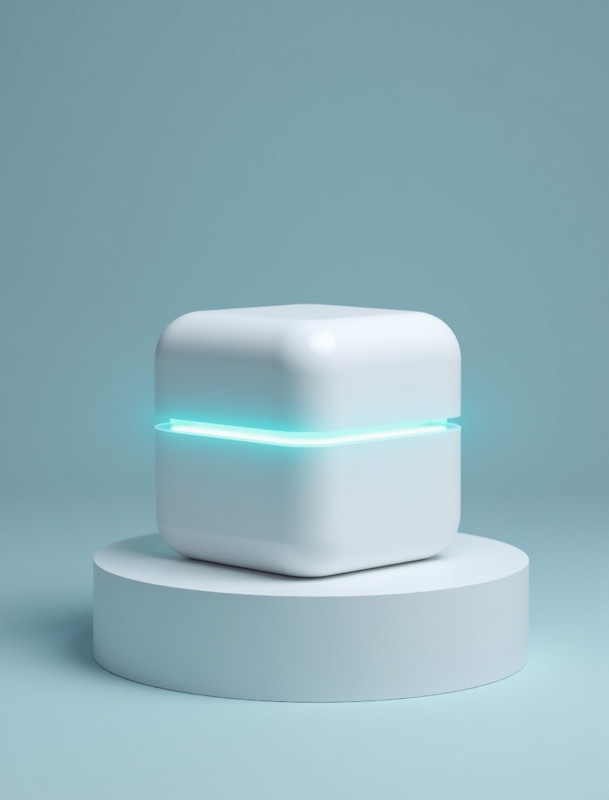
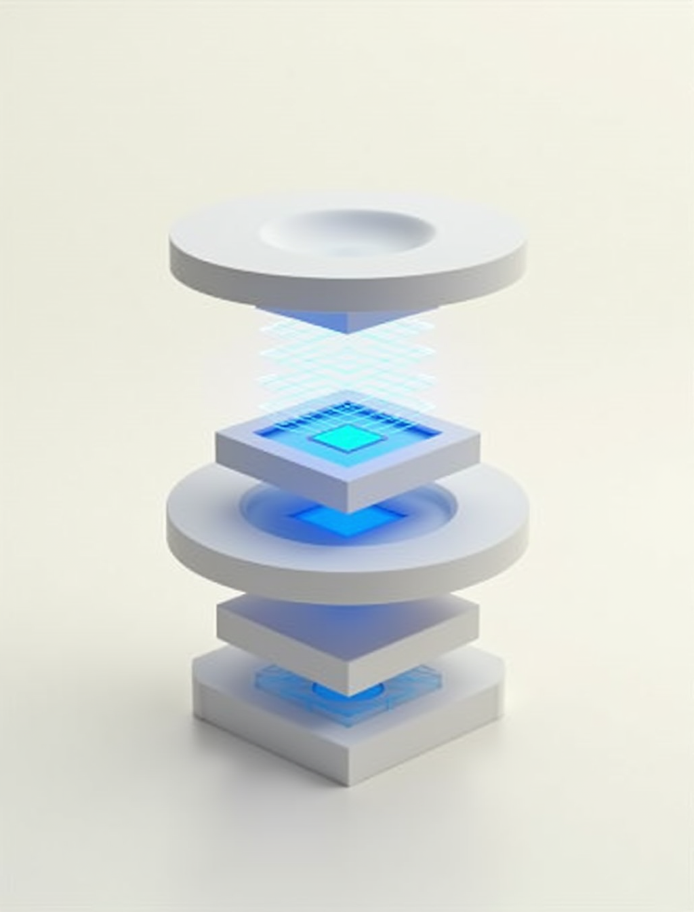

In the last twenty-four months mainstream consumers learned that "cloud-connected smart home" means "expires when the vendor gets bored." Belkin killed the entire Wemo line in a Milan press release. Logitech gave Pop-button owners two weeks. Neato's cloud died. Insteon went bankrupt. VF Home is the alternative: local-first firmware coordinating Matter + Zigbee + Z-Wave on hardware you already own, with sealed remote access and a Permanence Guarantee baked into Terms § 15.

Mainstream smart-home brands have taught consumers the same lesson: the moment your vendor stops paying for its cloud, your hardware becomes a paperweight. Belkin, Logitech, Neato, Insteon. Home Assistant exists but requires twenty hours of YAML to get going. Four failures, one productisation gap.
Belkin killed the entire Wemo line in a Milan press release in January 2026. Logitech gave Pop-button owners two weeks. Neato's floor-cleaner cloud died in 2025. Insteon went bankrupt with hundreds of thousands of devices in customers' homes.
Ring's police-access history. Nest footage subpoenaed. Wyze cloud outages. Arlo per-camera cloud-storage fees. A camera vendor whose business model is data ingestion makes your intimate spaces its product.
Alexa, Google Home and Siri Shortcuts ship every voice request to a third-party AI vendor's cloud. Each command you utter in your kitchen is training data somewhere else.
Home Assistant is superb engineering, loved by the technical minority. It requires a Raspberry Pi, a Docker install, and twenty hours of YAML to get running. Your 55-year-old parent will not use it as it stands.
Vincent's Malta home, his parents' home, Noirda GmbH's office. Three sites across two jurisdictions, with every hub configuration exercised end-to-end. It ships to the Falzon family before it ships to anyone else. If we can't run our own homes on it, it doesn't ship.
Anyone who watched Belkin, Logitech, Neato or Insteon walk away from products they'd paid for. This is the alternative, with the promise, in writing, that we cannot do the same.
Households where the doorbell + a garden camera + the garage feed matter, but where "cloud-hosted footage vendor" is not an acceptable answer. Local NVR, encrypted at rest, never sent to VF.
Users who tried Home Assistant, loved what it does, and gave up on the YAML. Same architecture, same open protocols, wrapped in a supported hardware matrix + polished apps + Terms § 16 warranty + Permanence Guarantee.
The audience that has read the last two years of tech scandals, finished with the same question (who builds this differently?) and is willing to pay €6.99/month for the answer.
Existing smart-home hubs ask users to trust that the vendor will keep the cloud running. VF Home moves the trust into code you can rebuild, contracts you can enforce, and a supported-hardware matrix you can source from any retailer.
Hub works standalone on the LAN. Sealed remote access via VF backend is an opt-in convenience: the relay sees encrypted bytes only, cannot decrypt payloads, and its unavailability does not affect local control.
The Permanence Guarantee, an enforceable Terms § 15 clause, releases source within 90 days on discontinuation, keeps last firmware verifiable forever in the transparency log, publishes hardware schematics for the R·02 appliance, and ships a Home Assistant migration tool.
Cyber Resilience Act enforcement begins September 11 2026. VF Home ships with manufacturer registration, 24-hour vulnerability reporting, SBOM per release, and 5-year minimum security-support, in effect on the same day incumbents begin their scramble.
R·01 ships as a Rust hub-core with FFI bindings to Swift + Kotlin, a Fastify backend that never sees plaintext, and three USB coordinator dongles (~€75 total user hardware). One new sub-primitive added to `vf-privacy-kit`: `household-quorum` for 2-of-N threshold approval on firmware updates, member removal, and panic-wipe. Like every VF system, it leaves the lab with the engine fitted and the harness tuned.

Matter/Thread + Zigbee + Z-Wave via three USB dongles (Nordic nRF52840, ConBee III, Zooz 800 series as reference). An internal adapter wraps each protocol and presents devices via one unified device model. Users see one device list.
Up to 4 ONVIF-compliant IP cameras. H.265 encoding. Per-camera retention 7 / 30 / 90 days plus motion-triggered clips for up to 180 days. AES-256-GCM encryption at rest with keys derived from admin PIN. Motion detection via per-pixel-diff (classical algorithm; no ML at R·01). Never uploaded to VF.
Five roles (admin / adult / teen / child / guest) with role-based device + camera access. Sensitive operations (firmware updates, member removal, panic-wipe) require 2-of-N `household-quorum` threshold signature. Recovery-share physical distribution as safety net.
Persistent WebSocket to VF backend via sealed transport. Mobile clients establish end-to-end sealed sessions with the hub; VF relay routes encrypted bytes without decrypting. Failure of VF relay does not affect local control.
Container + bare-metal firmware images for the supported-hardware matrix (Raspberry Pi 4/5, Intel NUC, Odroid H, generic mini-PC). Matter + Zigbee + Z-Wave via USB coordinators. Up to 4 ONVIF cameras with local NVR. iOS + Android + web console. Sealed remote access. 6–7 months of build after seed close, then CRA registration + hardware-matrix testing + IDPC pre-consultation to Malta launch.
SPEC COMPLETECE-marked HomeSafe One dedicated appliance (~€349 one-off). Extended NVR to 16 cameras. On-device voice control via local Whisper.cpp; voice never leaves the hub. Router-integration edge mode (bundles Guardian Shield DNS filter). HomeKit-compatible mode. DALI + KNX bridges. Family tier (8 members with granular permissions). Classical CV motion analytics (person/vehicle/animal detection, still no ML, no face recognition, ever).
NEXTHomeSafe Router replaces the user's ISP router entirely. Enterprise / small-firm tier for up to 50 devices with staff role management. Federated multi-property households (holiday home, elderly parent's house). Solar + storage energy-management orchestration. Business IoT integration with FileIT for tax-reportable asset registry.
PLANNEDThirteen-section spec covering the hub firmware distribution model, the Matter/Zigbee/Z-Wave adapter architecture, the local NVR engine, sealed remote-access mechanics, household + quorum design, backend architecture (five capabilities only), and the CRA-compliance framework.
PUBLISHED · 2026-09-13 →Eight adversary tiers unique to Home (hostile executor, burglar, camera-network attacker, camera-vendor supply-chain). Nine primary threats. T·01 camera-footage exfiltration flagged with LOW consumer / MEDIUM state-actor residual. Twelve threat-driven test scenarios enumerated.
PUBLISHED · 2026-09-13 →Full Regulation (EU) 2024/2847 compliance covering Annex I essential requirements, Annex II vulnerability handling with 24-hour actively-exploited-vuln reporting SLA, SBOM per release in SPDX + CycloneDX, and 5-year minimum security-support lifecycle.
PUBLISHED · 2026-09-13 →Executive summary, product, market and regulatory tailwind, traction targets, technology and IP, team plan, financials, risks (with an unsoftened rating of camera-footage sensitivity), the ask (€2–4m seed for the seven-product family) and portfolio context.
PUBLISHED · 2026-09-13 →Everything you need on your side to run it,
and nothing you don’t.
R·01 is bring-your-own hardware from the supported matrix: Raspberry Pi 4/5, Intel NUC 11/12/13, Odroid H3/H4 or a generic x86_64 mini-PC with at least 4 GB RAM and 64 GB storage. Three USB dongles cost around €75 in total. R·02 adds the CE-marked HomeSafe One appliance at about €349 one-off, and R·03 the HomeSafe Router.
Matter/Thread, Zigbee and Z-Wave through three USB coordinators (Nordic nRF52840, ConBee III or Sonoff ZBDongle-E, Zooz 800 series or Aeotec Z-Stick 7). An internal adapter wraps each protocol into one unified device model, so you see one device list. R·02 adds a HomeKit-compatible mode and DALI and KNX bridges.
No. VF Home runs a local NVR for up to 4 ONVIF-compliant IP cameras (Profile S and T) with H.265 encoding and AES-256-GCM encryption at rest, keys derived from the admin PIN. Retention is 7, 30 or 90 days per camera plus motion-triggered clips for up to 180 days, on local disk only, never uploaded to VF. Ring, Nest, Wyze and Arlo are not supported.
The hub works standalone on your LAN. Sealed remote access through the VF backend is an opt-in convenience: mobile clients establish end-to-end sealed sessions with the hub, and the relay routes encrypted bytes without decrypting them. If the VF relay is unavailable, local control is unaffected. On-device voice control via local Whisper.cpp arrives in R·02.
The Permanence Guarantee, an enforceable Terms § 15 clause, releases the source within 90 days of discontinuation, keeps the last firmware verifiable forever in the transparency log, publishes hardware schematics for the R·02 appliance and ships a Home Assistant migration tool. The hub keeps running on your LAN regardless, because the cloud was optional from the start.
The R·01 launch target is 2027 Q2-Q3 in Malta, pending seed close, CRA registration with Malta CSIRT, hardware-matrix testing, IDPC Malta pre-consultation and insurance underwriting. VF Home ships CRA-compliant from day one, with 24-hour vulnerability reporting, an SBOM per release and 5-year minimum security support. The service is priced at €6.99 a month.
R·01 launch target 2027 Q2-Q3 pending seed close, CRA registration with Malta CSIRT, hardware-matrix test-bench setup, IDPC Malta pre-consultation, and insurance underwriting. Register interest and we will tell you when Malta launches.